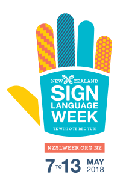

This year, New Zealand Sign Language Week is being held between 7 and 13 May. This year’s NZSL Week theme is ‘NZSL is for Everyone’.
NZSL Week raises awareness of New Zealand’s Deaf community and provides a platform for Deaf people to proudly promote their language and culture.
New Zealand Sign Language (NZSL) is recognised as an official language of New Zealand through the New Zealand Sign Language Act 2006. For this reason, NZSL has special mention in The New Zealand Curriculum (2007). As Deaf people come to have more people to communicate with, our society becomes more inclusive.
The NZ curriculum specifically states that: New Zealand needs more people who are fluent users of the language and who have an appreciation of deaf culture. By learning NZSL, hearing students are able to communicate with their deaf peers and participate in the deaf community. Skilled communicators may find career opportunities that involve working with deaf people.
The Curriculum website has a number of resources for New Zealand teachers and students to use to gain a better understanding of the importance of sign language for all New Zealanders. These resources include: